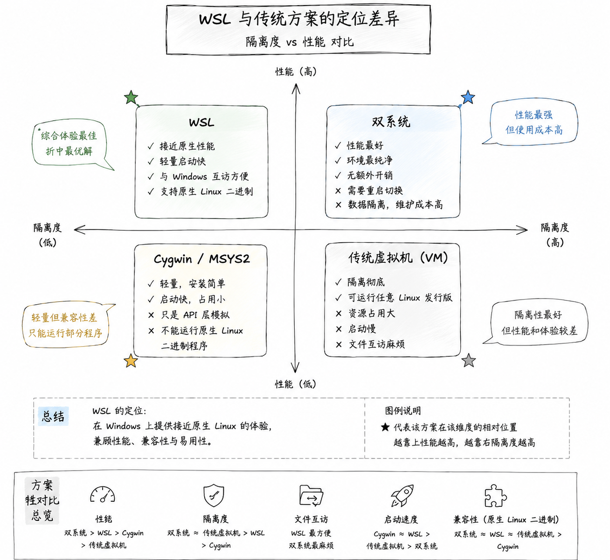
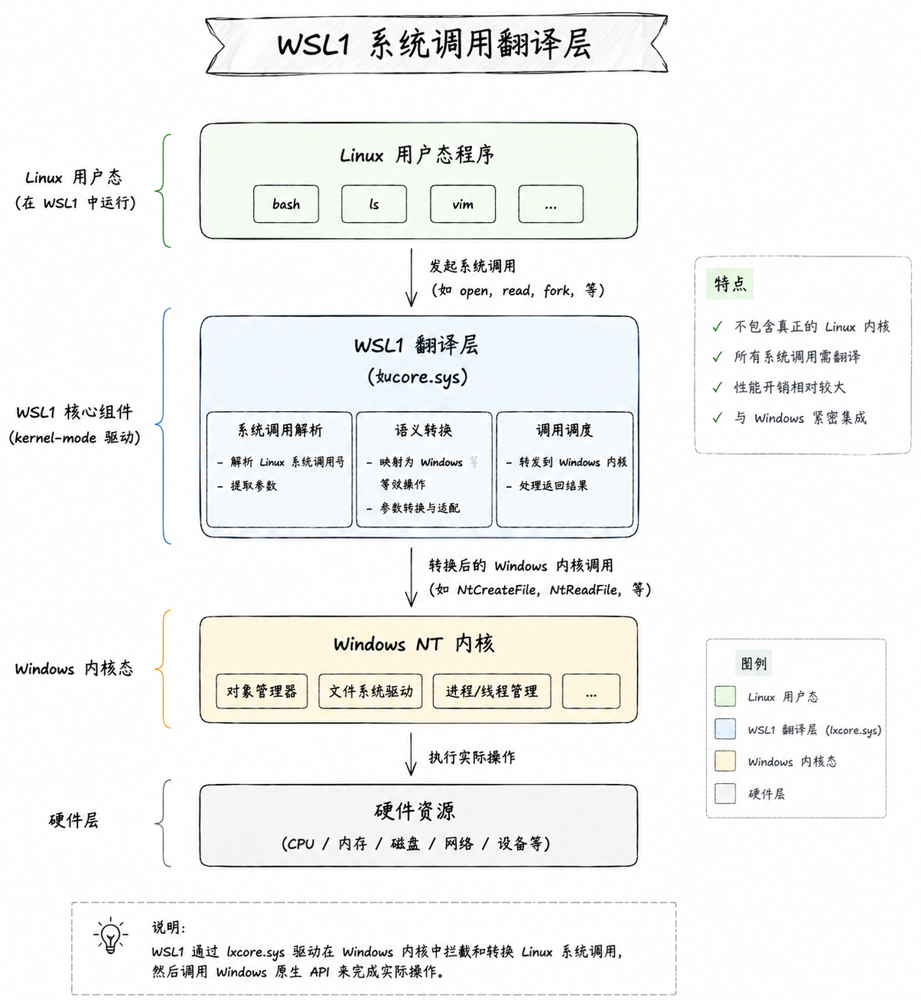
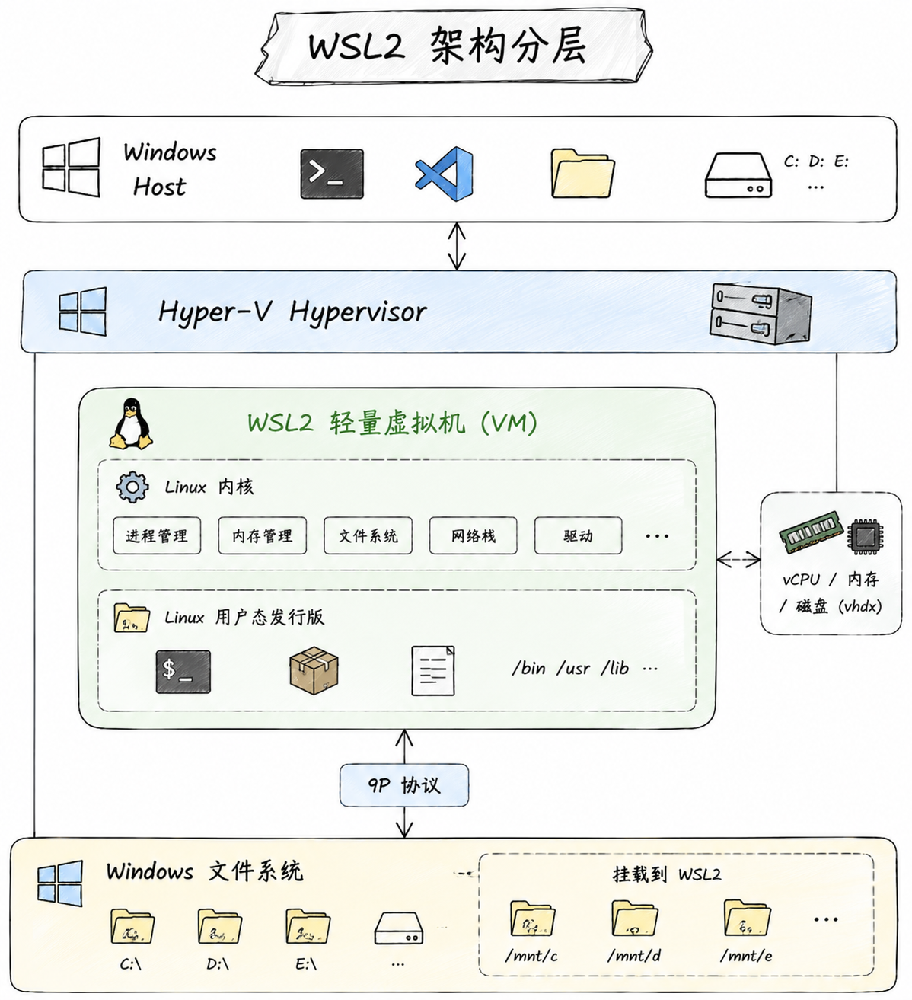
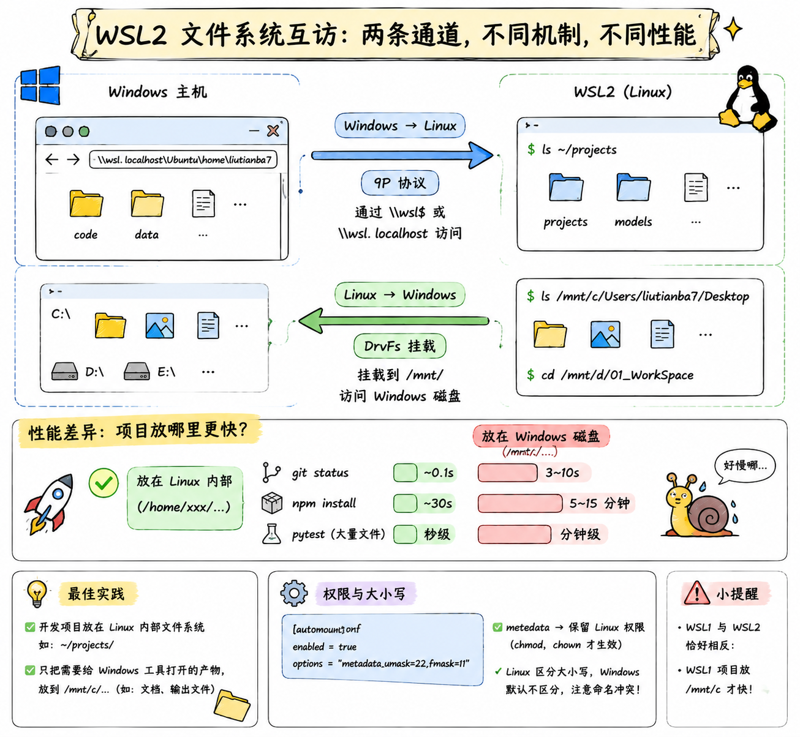
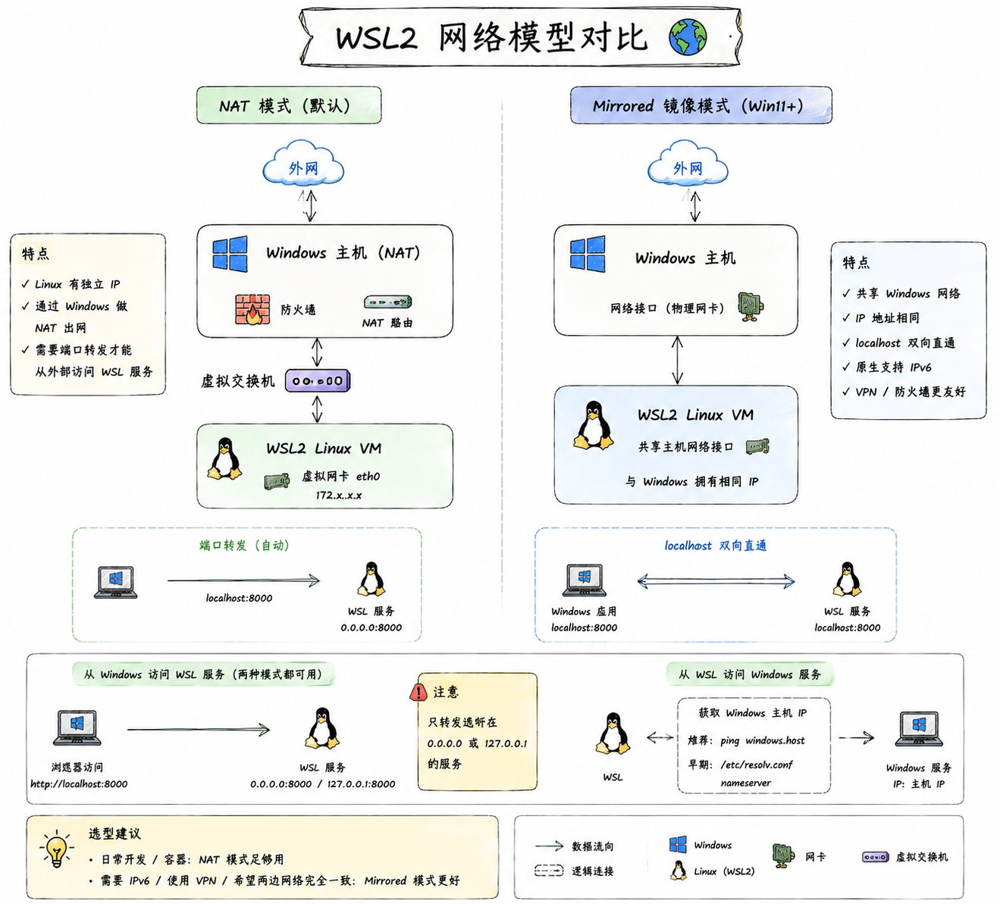

02_Wsl
WSL 概述 ⭐⭐⭐
官方文档：Microsoft Learn - WSL | WSL GitHub
WSL（Windows Subsystem for Linux，适用于 Linux 的 Windows 子系统）是微软为 Windows 提供的一层官方兼容能力，让用户可以在 Windows 上直接运行原生的 Linux 命令行工具、二进制程序甚至完整的 Linux 发行版，不需要装双系统、也不需要传统意义上的虚拟机。
一、为什么需要 WSL
对开发者来说，"我用 Windows 但想用 Linux 干活"是一个非常常见的需求：Linux 有更完整的开发生态、更接近生产环境、更好用的包管理。以前解决这个矛盾有三条路，但每一条都不完美：
| 方案 | 优点 | 痛点 |
|---|---|---|
| 双系统 | 性能最好，环境干净 | 切换要重启，两个系统数据隔离，痛苦 |
| 传统虚拟机（VMware/VirtualBox） | 隔离彻底 | 资源占用大、启动慢、和宿主机文件互访麻烦 |
| Cygwin / MSYS2 | 轻量 | 只是 API 层模拟，跑不了原生 Linux 二进制 |
WSL 的出现，本质是把这三条路的优点合起来：像装了个软件一样轻，像双系统一样能跑原生 Linux 程序，像虚拟机一样和 Windows 双向互访文件。说白了，WSL 让 Windows 变成了一台"顺带能跑 Linux"的机器。

二、WSL1 vs WSL2 架构 ⭐⭐⭐
WSL 目前有两个版本，且共存于同一台机器上——不同发行版可以用不同版本。理解两者的架构差异，是搞清楚 WSL 一切行为的钥匙。
2.1 WSL1：系统调用翻译层
WSL1 的做法很聪明也很"取巧"：它不启动任何 Linux 内核，而是把 Linux 的系统调用实时翻译成 Windows NT 内核的系统调用。
打个比方：Linux 程序说"我要 open() 一个文件"，WSL1 拦住这个请求，把它翻译成 Windows 的 NtCreateFile，交给 Windows 内核去执行。翻译层跑在 Windows 内核里（lxcore.sys、lxss.sys 两个驱动），Linux 程序自己完全没意识到底下不是 Linux。

这种设计的优点是极其轻量——没有虚拟机、没有独立内核，启动几乎瞬时，和 Windows 文件系统完全共用。但缺点也很明显：
- 只翻译了一部分系统调用，很多 Linux 内核特性（比如
io_uring、eBPF、真正的 cgroup）根本没法支持 - 文件系统性能反而拉胯——虽然直接访问 NTFS，但 Linux 大量小文件操作（比如
git status、npm install）频繁调用系统调用，翻译开销叠加起来非常慢 - 无法运行需要真实 Linux 内核的软件（比如 Docker）
2.2 WSL2：轻量级 Linux 虚拟机
WSL2 换了完全不同的思路：跑一个真正的 Linux 内核——微软自己维护了一个精简版的 Linux 内核（github.com/microsoft/WSL2-Linux-Kernel），运行在一台基于 Hyper-V 的轻量级实用工具虚拟机（Lightweight Utility VM）里。
这里的"轻量"和你印象里的 VMware 虚拟机不是一个概念：
- 秒级启动（不是分钟级）
- 动态内存：需要多少用多少，不用会归还给 Windows
- 和 Windows 共享网络栈（默认）、共享 GPU（可选）
- 只在你第一次运行
wsl命令时才启动虚拟机，没在用时几乎零开销

WSL2 里的每个发行版（Ubuntu、Debian 等）并不是各自一台虚拟机——所有发行版共享同一个 Linux 内核实例，只是有各自独立的用户态文件系统（ext4 格式的 .vhdx 虚拟磁盘）。
2.3 两者对比与选择 ⭐⭐⭐
| 维度 | WSL1 | WSL2 |
|---|---|---|
| 本质 | 系统调用翻译 | 真实 Linux 内核 + 轻量 VM |
| 启动速度 | 极快（瞬时） | 秒级 |
| 文件系统兼容性 | 100%（就是 NTFS） | ext4，需通过 \\wsl$ 互访 |
| 访问 Windows 文件性能 | 快 | 慢（跨系统边界，走 9P 协议） |
| 访问 Linux 文件性能 | 慢（翻译开销） | 快（原生 ext4） |
| 完整系统调用支持 | 部分 | 完整 |
| 能跑 Docker | ❌ | ✅ |
| systemd 支持 | ❌ | ✅（需配置） |
| GPU 加速 | ❌ | ✅ |
| 内存占用 | 极低 | 动态分配 |
| 网络 | 共用 Windows | 独立 IP（NAT/Mirrored） |
怎么选
99% 的场景选 WSL2。只有当你的项目文件必须放在 Windows 目录（比如需要和 Windows 上的其他工具协作），且频繁读写这些文件时，WSL1 才有优势。新装的 WSL 默认就是 WSL2，无需操心。
三、安装与初始化
3.1 前置要求
- Windows 10 版本 2004（Build 19041）以上，或 Windows 11（推荐）
- BIOS 中开启虚拟化（Intel VT-x / AMD-V），一般新机器默认开
- 用管理员权限运行 PowerShell 或 Windows Terminal
如何确认虚拟化已开启
在任务管理器 → 性能 → CPU 面板右下角，看"虚拟化"是否为"已启用"。若显示"已禁用"，需要进 BIOS 打开对应选项（Intel 一般叫 VT-x 或 Intel Virtualization Technology，AMD 叫 SVM Mode）。
3.2 一行命令装完
现代 WSL 的安装已经简化到一条命令：
装完重启，会自动弹出 Ubuntu 让你设置用户名和密码。整个过程包括了：
- 启用
Virtual Machine Platform和Windows Subsystem for Linux两个可选组件 - 下载最新版 Linux 内核
- 设置 WSL2 为默认版本
- 安装 Ubuntu 发行版
3.3 指定发行版安装
# 查看在线可选的发行版
wsl --list --online
# 指定发行版安装（不加则默认 Ubuntu）
wsl --install -d Debian
wsl --install -d Ubuntu-22.04
常见发行版选择建议：
| 发行版 | 适合场景 |
|---|---|
| Ubuntu（默认） | 通用开发、AI/ML 生态最全、教程最多 |
| Debian | 想要更精简、更接近服务器环境 |
| Arch / Kali | 特定用途（渗透测试、滚动更新爱好者） |
3.4 首次启动后的必做操作
进入 Linux 后先做这几件事：
Ubuntu 22.04+ 的源配置在 /etc/apt/sources.list.d/ubuntu.sources（新格式），改用清华源：
四、日常命令 ⭐⭐
WSL 的入口命令就是 wsl，跑在 Windows 侧（PowerShell / CMD / Terminal 里）。
4.1 主命令速查
| 命令 | 作用 |
|---|---|
wsl |
进入默认发行版的默认用户 shell |
wsl -d <发行版名> |
进入指定发行版 |
wsl -u <用户名> |
以指定用户身份进入 |
wsl -e <命令> 或 wsl -- <命令> |
在 Linux 里执行一条命令，执行完退出 |
wsl --list / wsl -l -v |
列出所有发行版及版本、状态 |
wsl --set-default <发行版> |
设为默认发行版 |
wsl --set-version <发行版> 2 |
把某个发行版从 WSL1 转成 WSL2 |
wsl --terminate <发行版> |
关闭指定发行版（保留其他运行中的） |
wsl --shutdown |
关闭所有发行版和虚拟机（最强力） |
wsl --update |
更新 WSL 内核 |
wsl --version |
查看 WSL 各组件版本 |
4.2 发行版备份、迁移、克隆
WSL 提供了 export / import 组合，可以把整个发行版做成 tar 包，非常方便备份或迁移。
# 导出：把 Ubuntu 完整打包成 tar
wsl --export Ubuntu D:\backup\ubuntu.tar
# 卸载原发行版
wsl --unregister Ubuntu
# 导入：把 tar 恢复到新位置（可以顺便把虚拟磁盘挪到 D 盘）
wsl --import Ubuntu D:\WSL\Ubuntu D:\backup\ubuntu.tar
为什么要 import 到 D 盘
默认发行版数据存在 C:\Users\<你>\AppData\Local\Packages\...，日子久了 C 盘会被吃满。用 --export + --unregister + --import 的组合技把它挪到 D 盘，是老 WSL 用户人手一份的技能。
4.3 关闭：terminate vs shutdown
新手常混淆这两个命令：
wsl --terminate <发行版>：只关闭指定的那一个发行版，其他发行版和虚拟机本身继续跑wsl --shutdown：关掉整个 WSL 虚拟机，所有发行版一起终止
当 WSL 卡死、内存吃满、.wslconfig 改动想生效——都是 wsl --shutdown 一把梭。
4.4 从 Windows 直接调 Linux 命令
WSL 有个非常爽的能力：在 PowerShell 里可以直接跑 Linux 命令，把 Linux 工具当 Windows 命令用。
# 用 Linux 的 grep 搜 Windows 文件
wsl grep -r "TODO" .
# 用 Linux 的 curl 下载
wsl curl -O https://example.com/file.tar.gz
# 反过来，在 Linux 里也能直接跑 Windows 的 exe
# 在 bash 里：
explorer.exe . # 打开当前目录的资源管理器
notepad.exe file.txt # 用记事本打开
code . # 启动 VSCode（VSCode 装在 Windows 侧）
这种"双向调用"是 WSL 最舒服的体验之一——两个系统像糖水一样融在一起。
五、文件系统互访 ⭐⭐⭐
WSL 两个方向的文件互访机制不一样，性能特性也天差地别，理解清楚能避免 90% 的"WSL 好慢啊"的抱怨。
5.1 Windows → Linux：\\wsl$ 或 \\wsl.localhost
在 Windows 资源管理器地址栏或任意命令里输入：
或 Windows 11 推荐的新写法：
就能直接访问 WSL2 里的文件。这条路径实际走的是9P 协议——WSL 内置了一个 9P 文件服务器，Windows 侧作为客户端连接过去。
5.2 Linux → Windows：/mnt/c/...
在 Linux 里，Windows 的每个盘符会被挂载到 /mnt/ 下：
底层用的是 DrvFs —— 一个专为跨系统访问优化的挂载类型，能处理 Windows 权限和大小写差异。

5.3 性能陷阱：不要把项目放 /mnt/c ⭐⭐⭐
这是 WSL2 最重要的一条实践，没有之一。
WSL2 里访问 /mnt/c/... 的文件，每次读写都要跨越"Linux VM ↔ Windows 主机"的边界。对少量文件影响不大，但如果项目里有几万个小文件（比如 node_modules、Python 虚拟环境），性能会差到什么程度？
| 操作 | 项目在 /home/user/proj（Linux 内） |
项目在 /mnt/c/proj（Windows 内） |
|---|---|---|
git status |
~0.1 秒 | 3-10 秒 |
npm install |
30 秒 | 5-15 分钟 |
pytest（数千文件） |
秒级 | 分钟级 |
铁律
开发项目一定放 Linux 文件系统里（/home/user/...），只把需要给 Windows 工具打开的产物放到 /mnt/c/...。
反过来在 WSL1 里恰好相反——WSL1 天生就是 NTFS，项目放 /mnt/c 才性能最好。所以"项目该放哪"取决于你用的是 WSL1 还是 WSL2。
5.4 权限映射与大小写敏感
Linux 文件系统区分大小写，Windows NTFS 默认不区分，交叉访问时容易出问题。可以通过 /etc/wsl.conf 调整挂载行为：
metadata 参数让 DrvFs 记录 Linux 风格的权限位（chmod、chown 才生效），是几乎必开的选项。
六、网络模型
WSL2 的网络模型经历过一次比较大的变化，一定要区分清楚。

6.1 默认 NAT 模式
WSL2 默认走 NAT 模式：Linux VM 有自己的一张虚拟网卡，独立 IP（一般是 172.x.x.x 网段），通过 Windows 主机做 NAT 出去。
6.2 从 Windows 访问 WSL 服务
好消息：WSL2 自带 localhost 转发——你在 Linux 里跑一个 python -m http.server 8000，在 Windows 浏览器打开 http://localhost:8000 就能访问，微软自动帮你做了 NAT 转发。
坏消息：这个转发只处理监听 0.0.0.0 或 127.0.0.1 的服务。如果你的服务只绑 IPv6 或某个特定 IP，可能就通不了。
6.3 从 WSL 访问 Windows 服务
从 Linux 访问 Windows 上的服务，需要用 Windows 主机的 IP，不是 localhost：
# 从 /etc/resolv.conf 取 Windows 主机 IP（早期做法）
cat /etc/resolv.conf | grep nameserver
# 新版 WSL 提供了固定的主机名
ping windows.host # WSL 会自动解析
6.4 Mirrored 镜像网络模式（Win11 新特性）
Windows 11 + WSL 0.0.10 起，支持一种叫 Mirrored（镜像） 的新网络模式：Linux VM 共享 Windows 的网络接口，两边看到的 IP 一模一样，localhost 双向可达，且原生支持 IPv6。
开启方式，在 .wslconfig 里：
什么时候用 mirrored
- 需要 IPv6
- 用 VPN，NAT 模式会把 Linux 隔离在 VPN 外
- 想让 Windows 和 Linux 完全共享一套网络视图
但 mirrored 模式还比较新，某些容器编排或防火墙场景可能有奇怪问题。日常够用就先留 NAT。
七、配置文件
WSL 有两套配置文件，作用范围和归属完全不同，别搞混：
| 文件 | 位置 | 作用范围 | 生效方式 |
|---|---|---|---|
.wslconfig |
Windows 侧：C:\Users\<你>\.wslconfig |
全局，所有发行版共享（虚拟机层面） | wsl --shutdown 后重启 |
wsl.conf |
Linux 侧：/etc/wsl.conf |
单个发行版，每个发行版有自己的一份 | 该发行版重启后生效 |
7.1 .wslconfig —— 管虚拟机
# C:\Users\liutianba7\.wslconfig
[wsl2]
# 最大内存（避免 WSL 吃满物理内存）
memory=8GB
# 最多 CPU 核数
processors=8
# swap 大小
swap=4GB
# 网络模式：NAT（默认）或 mirrored
networkingMode=mirrored
# 自动同步时钟
localhostForwarding=true
[experimental]
# 空闲时自动回收内存给 Windows
autoMemoryReclaim=gradual
# 稀疏虚拟磁盘（vhdx 会自动收缩，非常香）
sparseVhd=true
内存不加限制会怎样
默认 WSL2 可以吃到你物理内存的 50%（Win11）或 80%（Win10）。跑大项目时经常把 Windows 挤到只剩 2G，卡死浏览器。建议手动设 memory 上限，别信"动态回收"，实际回收得很懒。
7.2 /etc/wsl.conf —— 管单个发行版
# /etc/wsl.conf（在 Linux 里 sudo vim 编辑）
[boot]
# 启用 systemd（Ubuntu 22.04+ 默认已开）
systemd=true
# 开机执行的命令
command="service docker start"
[user]
# 默认登录用户
default=liutianba7
[automount]
# Windows 盘挂载配置
enabled=true
root=/mnt/
options="metadata,umask=22,fmask=11"
[network]
# 自定义主机名
hostname=my-wsl
# 生成 /etc/resolv.conf
generateResolvConf=true
改完记得重启对应发行版
改 .wslconfig 要 wsl --shutdown 全部重启；改 wsl.conf 只需 wsl --terminate <发行版名> 然后重新进就行。
八、进阶集成
8.1 VSCode Remote-WSL ⭐⭐⭐
WSL 最杀手级的使用姿势，没有之一。装一个 VSCode 插件叫 WSL（前身 Remote-WSL），然后：
VSCode 会自动启动 Windows 侧的界面，但语言服务、终端、调试、Git 全都在 Linux 侧运行。UI 归 Windows，内核归 Linux，两全其美。
为什么这个方案这么香
- 项目文件在 Linux 里，
git status快得飞起 - 用的是 Linux 的 Python / Node / gcc，环境和生产一致
- Windows 侧看到的是熟悉的 VSCode UI，不需要装 X Server 转发图形界面
8.2 Docker Desktop + WSL2
Docker Desktop for Windows 从 2020 年起改用 WSL2 做后端——本质上 Docker 引擎跑在一个叫 docker-desktop 的隐藏 WSL 发行版里。
安装 Docker Desktop 后，在设置里勾选 "Use the WSL 2 based engine"，再勾选 "Enable integration with my default WSL distro"，就能在 Ubuntu 里直接用 docker 命令，容器实际跑在 WSL2 虚拟机中。
好处：
- 不需要在 Windows 上装 Hyper-V 完整版
- 容器和 WSL 的 Linux 发行版共享内核
- 性能远好于旧版基于 Hyper-V VM 的 Docker Desktop
8.3 GPU 直通（CUDA in WSL）
WSL2 支持 GPU 半虚拟化——NVIDIA 显卡驱动装在 Windows 侧，Linux 侧通过 libdxcore 就能访问 GPU，跑 CUDA、PyTorch、TensorFlow 都可以。
配置流程（大方向）：
- 装 Windows 版 NVIDIA 驱动（不要在 WSL 里再装 Linux 版驱动）
- 在 WSL 里装 CUDA Toolkit（选 Linux WSL-Ubuntu 版本，不是通用 Linux 版）
- 装
nvidia-container-toolkit就能在容器里用 GPU
看到 GPU 信息就成了。这条路线对搞 AI 的人来说是 WSL2 最重要的能力之一。
别踩这个坑
千万不要在 WSL 的 Ubuntu 里再装 Linux 版 NVIDIA 驱动（apt install nvidia-driver-xxx），会直接搞坏 GPU 直通。WSL 用的是 Windows 侧驱动的 libdxcore 中转。
8.4 systemd 与 WSLg
- systemd：Ubuntu 22.04 起默认开启，可以正常
systemctl start/stop服务了。老版本需要在wsl.conf里手动systemd=true - WSLg（WSL GUI）：Windows 11 自带，可以在 WSL 里直接跑图形应用（比如
gedit、firefox），窗口会像原生 Windows 应用一样出现。底层用 Wayland + RDP 转发实现
九、常见踩坑
1. 虚拟磁盘越用越大，删文件不缩
WSL2 的虚拟磁盘（.vhdx）默认只涨不缩——你在 Linux 里删了 10G 文件，Windows 上的 vhdx 依然占 10G。
解决方案：.wslconfig 里开启 sparseVhd=true（新装的默认开），或手动压缩：
2. DNS 抽风、apt 装不了东西
WSL 默认会生成 /etc/resolv.conf，某些网络（尤其是公司 VPN）下会拿到坏的 DNS。
临时解决：手动写 /etc/resolv.conf：
永久解决：在 /etc/wsl.conf 加：
4. WSL 吃内存不释放
Linux 内核的 page cache 策略会尽量占满可用内存，导致 Windows 侧看到 vmmem 进程占用几个 G。
解决：.wslconfig 里限制 memory=8GB，并开 autoMemoryReclaim=gradual。极端情况 wsl --shutdown 一把梭。
5. 代理问题
Windows 上开了代理（Clash 之类），WSL 里默认走不了。因为 WSL2 是独立 IP，127.0.0.1:7890 指向的是 Linux VM 自己，不是 Windows。
NAT 模式解决方案：让代理软件监听 0.0.0.0，然后在 WSL 里：
# 拿到 Windows 主机 IP
host_ip=$(ip route show | grep -i default | awk '{print $3}')
export http_proxy="http://$host_ip:7890"
export https_proxy="http://$host_ip:7890"
Mirrored 模式下直接 127.0.0.1:7890 就行，是切换 mirrored 的重要理由之一。
附录
常用命令速查卡
# === 发行版管理（Windows 侧执行）===
wsl -l -v # 列出所有发行版
wsl --install # 装 WSL + 默认 Ubuntu
wsl --install -d Debian # 装指定发行版
wsl --set-default Ubuntu # 设默认
wsl --set-version Ubuntu 2 # 转 WSL2
wsl --unregister Ubuntu # 卸载（数据全删）
# === 备份迁移 ===
wsl --export Ubuntu D:\backup.tar
wsl --import Ubuntu D:\WSL\Ubuntu D:\backup.tar
# === 生命周期 ===
wsl # 进默认发行版
wsl -d Debian # 进指定发行版
wsl -u root # 以 root 进入
wsl -- ls -la ~ # 单条命令
wsl --terminate Ubuntu # 停指定发行版
wsl --shutdown # 停全部（改配置后必用）
# === 维护 ===
wsl --update # 更新内核
wsl --version # 查版本
wsl --status # 查状态
# === Linux 侧调 Windows（bash 里执行）===
explorer.exe . # 资源管理器打开当前目录
code . # 启动 VSCode
cmd.exe /c echo %USERNAME% # 跑 cmd 命令